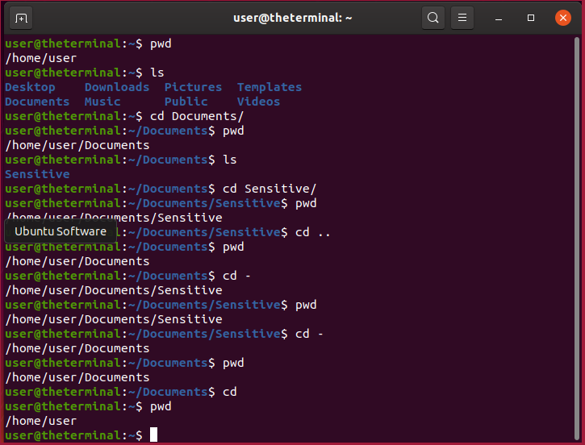
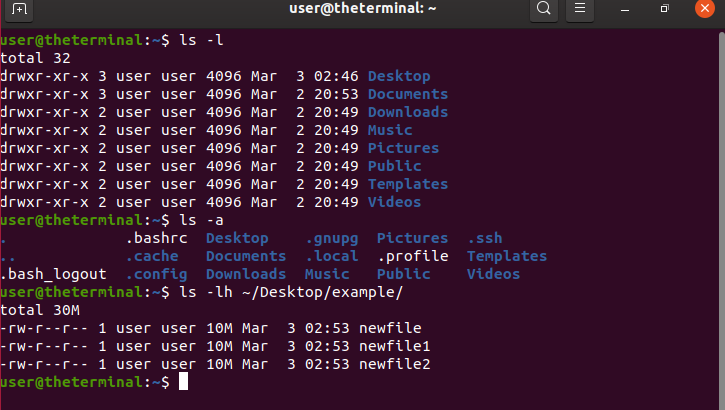
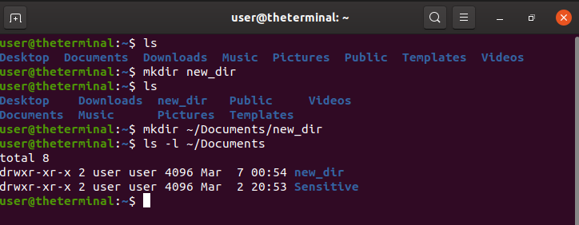
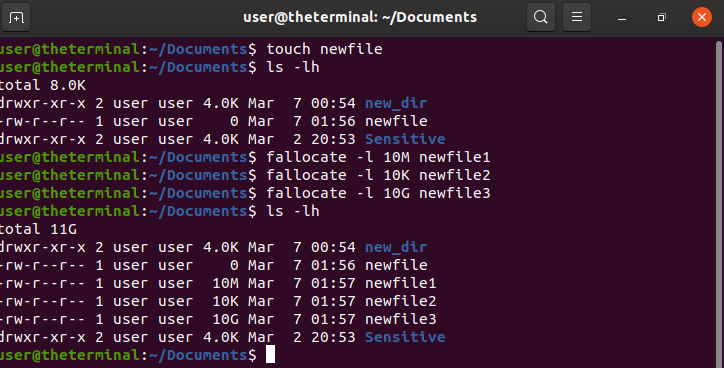

directory' and 'folder' can be used interchangeably. For the sake of avoiding too much repition I will use them both. There is no difference between the two.We already talked about the main commands for navigating the terminal on the ~/Linux page, be sure to take a moment to read that. Lets see what options those commands have and some useful tricks we can do with them.
Let's start with some useful 'shortcut' commands: understand that ~ or ~/ is a shortcut for your home directory. If you are
deep in a subdirectory tree and need to return to your home folder you can use: cd ~/. Just using the tilde will also work:cd ~
. Using cd by itself will also take you back to your home directory. The tilde and forward slash come in handy most when typing absolute
paths. If you didnt use the tilde you would have to write out the whole path from home /home/user/Linux/NetworkManager.
Also note that ~/ is not the same as /. The forward slash by itself represents your root directory, which is the directory all others are stored in. It's kind of like the C:\ drive in Windows.
The cd command has a few options: you can use cd - to go to the last directory you were in, which is not the same as going to the parent dir with cd ...
With this in mind we'll take this opportunity to discuss absolute and relative file paths. If you are in the dir that conatains the subdir you want to
navigate to, you can use the relative path: cd nameOfDirectory. However if you need to navigate to something that is outside your current working directory, you must specify the full(absolute) path to the file/dir: cd ~/Linux/NetworkManager.
Take a look at the image to the right to see the cd command in action. You'll notice we've also used the ls and pwd commands to list the contents of the directory and verify which directory we are currently in. Also notice that your current working directory is shown in the prompt line containing the username and hostname. user@theterminal:~/Linux/Commandline
So you can see the change directory (cd) command is essential and has some neat little tricks. Take a moment to play around with it and get comfortable.
ls command next.The list (ls) command lists the directories and files in your current directory, OR, as I'll demonstrate, will list the files
and directories that live in a specified file path. ls by itself will just list the names of the files and directories. If you need to know
which permissions are set for each file and directory you can use the ls -l (long list) command. Check out ~/Linux/Permissions for more information on how permissions work.
The ls -l command also
displays the date the files were created and their sizes in bytes. You can use the -l option in combination with any other option. Take a look at the image to see what I mean. Before I explain the next option for the ls command, you should understand that in Linux we have what are called "hidden" files and directories. These items will not appear when you run a simple ls command. To include hidden files in your list you need to add an -a option: ls -a. You can also get a long list with hidden items included: ls -la. The last option we will cover is the -h option. -h means 'human readable', and this refers to the file sizes. Instead of displaying the sizes in bytes they will be displayed as kb(kilobytes) which is much easier to understand. Using the -h option by itself will not change the output, it is used along with the -l option: ls -lh. Remember when I said you can list the dirs and files by providing a file path? Well as promised I will explain: Say you have a file in a subdirectory of your Desktop folder that you need to know the size/permissions of, but you are nested in your Documents directory and don't want to navigate out of it. In this situation you can provide an absolute path to the file/dir you want to see: ls -lh ~/Desktop/subdirectory Pretty convenient right? Take a look at the image to get a visual understanding.
To create a directory in Linux we use the mkdir (make directory) command. You can use this command using both relative and absolute paths. The syntax for the relative path is as follows: mkdir name_of_dir where name_of_dir is the name you chose for your new directory. The new directory will be created inside your current working directory. To use mkdir with an absolute path: mkdir ~/Documents/name_of_dir. This will create a new folder in your ~/Documents directory. It doesn't have to live in the ~/Documents directory, I just chose that one for this example. You can create a directory from any parent directory you wish as long as you have write privelages.
We can use a few different commands to create empty files. We will discuss the touch and fallocate commands in this lesson. The touch command is the easiest, most basic command we can use to create an empty file. The syntax is as follows: touch newfile where newfile is the name of the file you are creating. You can use this command with both relative and absolute file paths. We can also allocate any available amount of space while creating a new file using the fallocate command. If you wanted to create a file with 10 megabytes of space allocated you would run: fallocate -l 10M newfile replacing newfile with the desired name for your new file. You can allocate sizes in gigabytes and kilobytes too. So you can see in the image that the touch command creates an empty file of size 0, and the fallocate command creates files of size 10MB, 10KB, and 10GB respectively.
The basic commands discussed on this page should get you started on your journey into using Linux. However, they only scratch the surface. Surf the site to learn some more advanced stuff and uncover the full power of the Linux commandline!